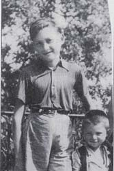

Portrait d’archive
Enfants Bulka
Albert BULKA
Albert BULKA est né le 28/06/1939 à LIEGE en Belgique.
Rassemblé à Lyon, il est déporté à Auschwitz le 13/04/1944 par le convoi n°71. Il est mort en déportation.
Dernière adresse connue : (Izieu)
Nom : BULKA
Prénom(s) : Albert
Date naissance : 28/06/1939
Âge (ans) : 4
Lieu naissance : Ougrée, Liège
Pays ou département : Belgique
Lieu rassemblement : Lyon
Dernière adresse : ?
Ville : Izieu (Ain)
Code postal : 01300
N° Convoi : 71
Date déportation : 13/04/1944
Informations diverses : Majer (Marcel) BULKA est né le 29 septembre 1930 à Kalisz, en Pologne, et son frère Albert le 28 juin 1939 à Ougrée-Liège en Belgique. Ils firent partie des 44 enfants du foyer collectif d’Izieu. Leurs parents furent internés au camp de Rivesaltes. Les enfants avaient pu quitter le camp et allèrent au foyer pour enfants de Palavas-les-Flots dans l’Hérault. Leur mère, Roizel, fut transférée de Rivesaltes à Drancy et déportée le 11 septembre 1942 par le convoi 31. Leur père, Mosiek-Cham, fut transféré de Rivesaltes à Gurs le 26 février 1943 puis de là à Drancy le 2 mars 1943, et fut déporté deux jours plus tard par le convoi 50 à Madanek et Sobidor. Les deux frères furent déportés par le convoi 71 du 13 avril 1944 au camp d’extermination d’Auschwitz, Pologne.
Lieu de déportation : Auschwitz
Lieu de départ : Drancy
Nombre total de déporté·e·s du convoi : 1500
Gazé·e·s à l'arrivée : 1265 (84,3 %)
Survivant·e·s en 1945 : 128 (8,5 %)
Marcel Majer BULKA
Marcel Majer BULKA est né le 29/09/1930 à Kalisz en Pologne.
Rassemblé à Lyon, il est déporté à Auschwitz le 13/04/1944 par le convoi n°71. Il est mort en déportation.
Dernière adresse connue : (Izieu)
Nom : BULKA
Prénom(s) : Marcel Majer
Date naissance : 29/09/1930
Âge (ans) : 13
Lieu naissance : Kalisz
Pays ou département : Pologne
Lieu rassemblement : Lyon
Dernière adresse : ?
Ville : Izieu (Ain)
Code postal : 01300
N° Convoi : 71
Date déportation : 13/04/1944
Informations diverses : Majer (Marcel) BULKA est né le 29 septembre 1930 à Kalisz, en Pologne, et son frère Albert le 28 juin 1939 à Ougrée-Liège en Belgique. Ils firent partie des 44 enfants du foyer collectif d’Izieu. Leurs parents furent internés au camp de Rivesaltes. Les enfants avaient pu quitter le camp et allèrent au foyer pour enfants de Palavas-les-Flots dans l’Hérault. Leur mère, Roizel, fut transférée de Rivesaltes à Drancy et déportée le 11 septembre 1942 par le convoi 31. Leur père, Mosiek-Cham, fut transféré de Rivesaltes à Gurs le 26 février 1943 puis de là à Drancy le 2 mars 1943, et fut déporté deux jours plus tard par le convoi 50 à Madanek et Sobidor. Les deux frères furent déportés par le convoi 71 du 13 avril 1944 au camp d’extermination d’Auschwitz, Pologne.
Lieu de déportation : Auschwitz
Lieu de départ : Drancy
Nombre total de déporté·e·s du convoi : 1500
Gazé·e·s à l'arrivée : 1265 (84,3 %)
Survivant·e·s en 1945 : 128 (8,5 %)